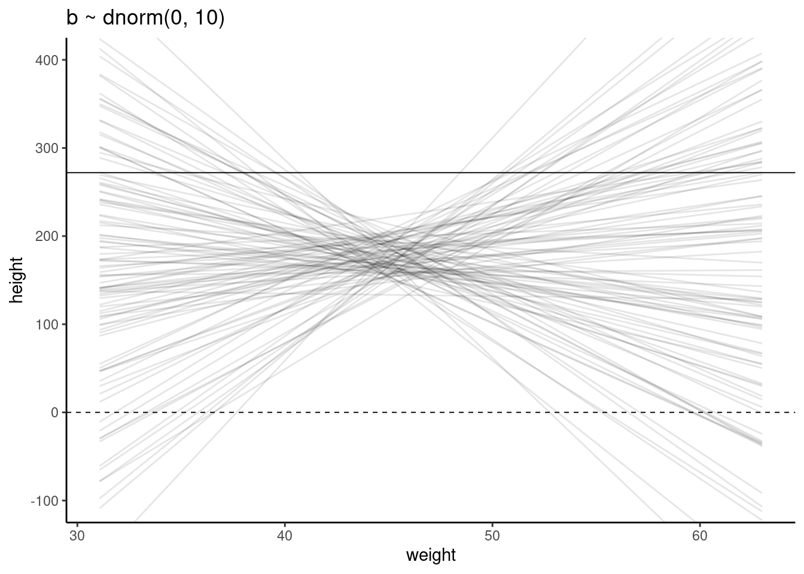
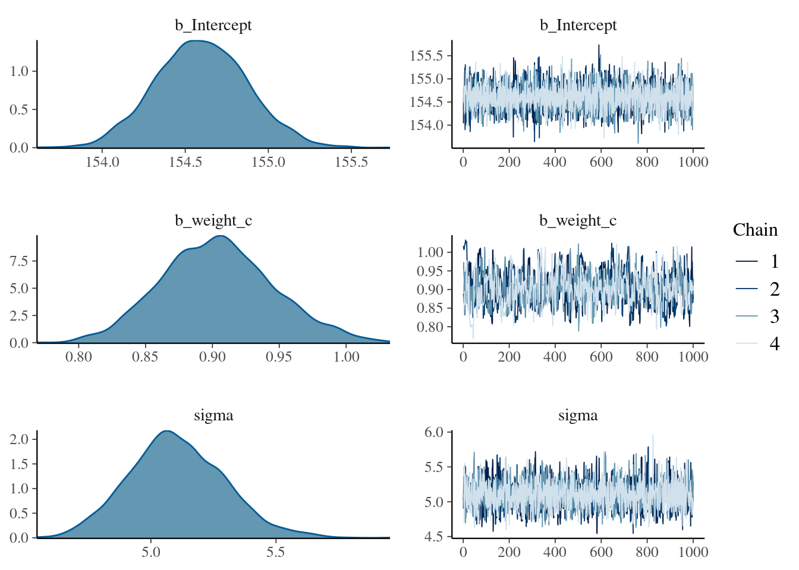
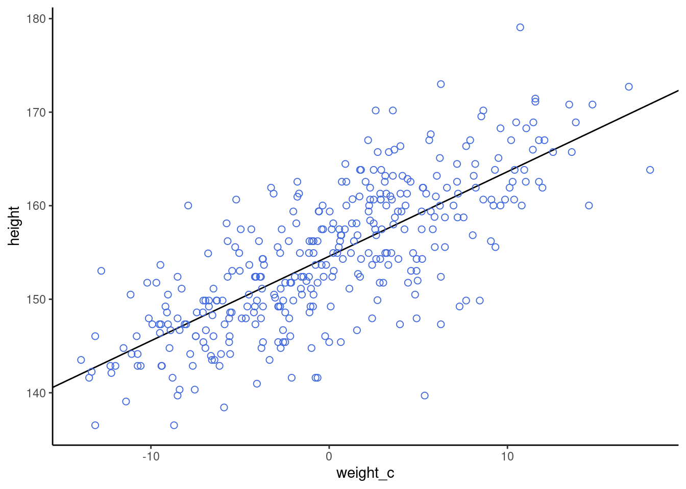
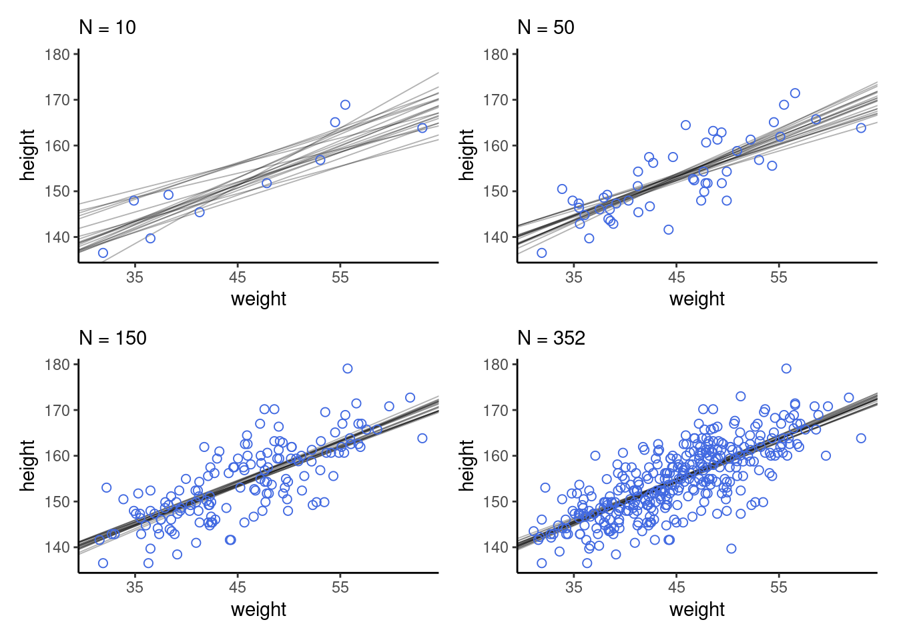
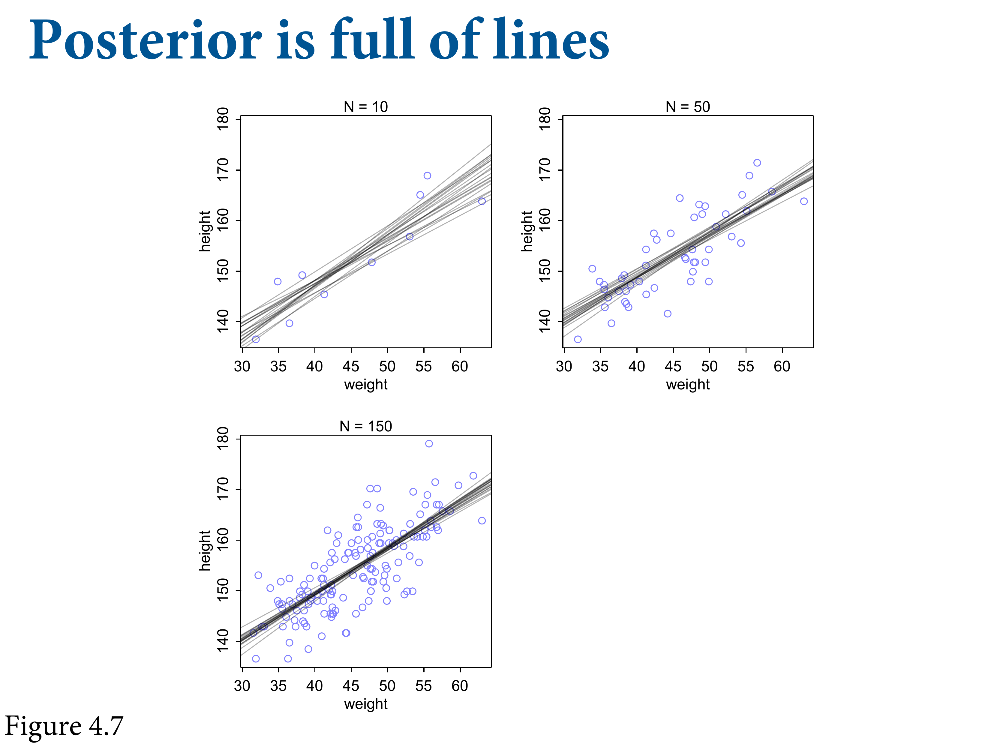
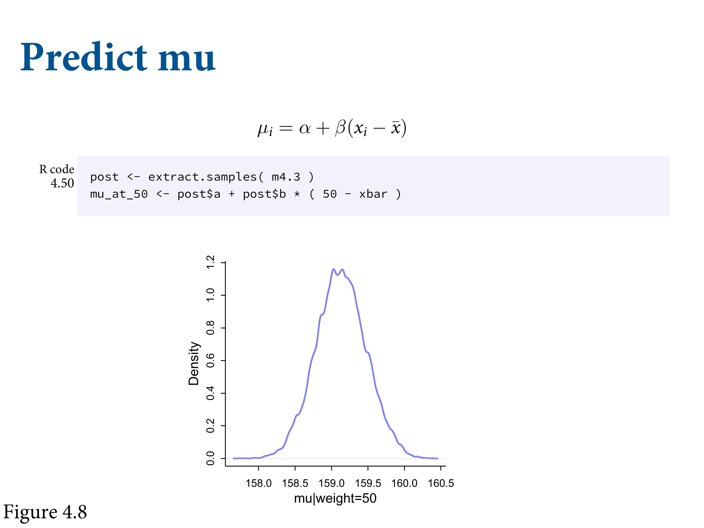

4.4 Linear prediction
Let’s look at how height in these Kalahari foragers covaries with weight.

ggplot(data = d2,
aes(x = weight, y = height)) +
geom_point(shape = 1, size = 2) +
theme_bw() +
theme(panel.grid = element_blank())
So now let’s add a line. When we learn the predictions, we can learn the statistical association between weight and height. The question is how would you statistically describe this relationship?
4.4.1 The linear model strategy
So what do we do? We add another variable to the model, and now we have a linear regression. This model has all the standard features. Now there’s an \(i\) on \(\mu\). That means it’s different for each person. \(\alpha\) is out population mean. \(\beta\) describes the relationship between \(x\) and \(y\).

The equals sign mean that it’s deterministically defined. \(\beta\) is what you’d call a slope, or the rate of change in \(mu\) for a unit change in \(x\). Why do we subtract x bar? This is called centering the predictor. Should be your default behaviour.

It’s now predicting lines. So what does the prior predictive distribution look like? A whole lot of lines.

set.seed(2971)
# how many lines would you like?
n_lines <- 100
lines <-
tibble(n = 1:n_lines,
a = rnorm(n_lines, mean = 178, sd = 20),
b = rnorm(n_lines, mean = 0, sd = 10)) %>%
expand(nesting(n, a, b), weight = range(d2$weight)) %>%
mutate(height = a + b * (weight - mean(d2$weight)))
head(lines)## # A tibble: 6 × 5
## n a b weight height
## <int> <dbl> <dbl> <dbl> <dbl>
## 1 1 191. -7.06 31.1 289.
## 2 1 191. -7.06 63.0 63.5
## 3 2 199. 0.839 31.1 187.
## 4 2 199. 0.839 63.0 214.
## 5 3 202. 3.93 31.1 147.
## 6 3 202. 3.93 63.0 272.Now we have 100 paris of \(\alpha\) and \(\beta\) values.
Simulate 100 lines as before.

lines %>%
ggplot(aes(x = weight, y = height, group = n)) +
geom_hline(yintercept = c(0, 272), linetype = 2:1, size = 1/3) +
geom_line(alpha = 1/10) +
coord_cartesian(ylim = c(-100, 400)) +
ggtitle("b ~ dnorm(0, 10)") +
theme_classic()
Getting the scatter right is important, because you can see these impossibly steep lines. Some of them take you from impossibly short individuals to twice the tallest. Want to dampen these expectations. Practise on these safe examples.

We know that \(\beta\) is positive, so let’s make it positive. A log normal distribution is a normal distribution logged. What’s nice is that they’re all positive. We want to assume the relationship between weight and height is positive.
set.seed(4)
tibble(b = rlnorm(1e4, mean = 0, sd = 1)) %>%
ggplot(aes(x = b)) +
geom_density(fill = "grey92") +
coord_cartesian(xlim = c(0, 5)) +
theme_classic()
A log-normal distribution is the distibution whose logarithm is normally distributed.
set.seed(4)
tibble(rnorm = rnorm(1e5, mean = 0, sd = 1),
`log(rlognorm)` = log(rlnorm(1e5, mean = 0, sd = 1))) %>%
pivot_longer(everything()) %>%
ggplot(aes(x = value)) +
geom_density(fill = "grey92") +
coord_cartesian(xlim = c(-3, 3)) +
theme_classic() +
facet_wrap(~ name, nrow = 2)

Still a lot of scatter, but still one crazy line. Now at least we’re in the possible range.
# make a tibble to annotate the plot
text <-
tibble(weight = c(34, 43),
height = c(0 - 25, 272 + 25),
label = c("Embryo", "World's tallest person (272 cm)"))
# simulate
set.seed(2971)
tibble(n = 1:n_lines,
a = rnorm(n_lines, mean = 178, sd = 20),
b = rlnorm(n_lines, mean = 0, sd = 1)) %>%
expand(nesting(n, a, b), weight = range(d2$weight)) %>%
mutate(height = a + b * (weight - mean(d2$weight))) %>%
# plot
ggplot(aes(x = weight, y = height, group = n)) +
geom_hline(yintercept = c(0, 272), linetype = 2:1, size = 1/3) +
geom_line(alpha = 1/10) +
geom_text(data = text,
aes(label = label),
size = 3) +
coord_cartesian(ylim = c(-100, 400)) +
ggtitle("log(b) ~ dnorm(0, 1)") +
theme_classic()
How to choose a prior? The procedure we’ve performed in this chapter is to choose priors conditional on pre-data knowledge of the variables - their constraints, ranges, and theoretical relationships.
4.4.2 Finding the posterior distribution

Measure \(\bar{x}\) Then define the quap model. Focus on the \(\mu\) line.
To add a predictor, just use the + operator in the model formula.
# make a new variable for `weight - xbar`
d2 <-
d2 %>%
mutate(weight_c = weight - mean(weight))
# fit model
b4.3 <-
brm(data = d2,
family = gaussian,
height ~ 1 + weight_c,
prior = c(prior(normal(178, 20), class = Intercept),
prior(lognormal(0, 1), class = b),
prior(uniform(0, 50), class = sigma)),
iter = 28000, warmup = 27000, chains = 4, cores = 4,
seed = 4,
file = "fits/b04.03")plot(b4.3)
b4.3b <-
brm(data = d2,
family = gaussian,
bf(height ~ a + exp(lb) * weight_c,
a ~ 1,
lb ~ 1,
nl = TRUE),
prior = c(prior(normal(178, 20), class = b, nlpar = a),
prior(normal(0, 1), class = b, nlpar = lb),
prior(uniform(0, 50), class = sigma)),
iter = 31000, warmup = 30000, chains = 4, cores = 4,
seed = 4,
file = "fits/b04.03b")4.4.3 Interpreting the posterior distribution
brms::posterior_summary(b4.3)[1:3, ] %>%
round(digits = 2)## Estimate Est.Error Q2.5 Q97.5
## b_Intercept 154.6 0.27 154.08 155.14
## b_weight_c 0.9 0.04 0.83 0.99
## sigma 5.1 0.19 4.75 5.50See the covariances:
vcov(b4.3) %>%
round(3)## Intercept weight_c
## Intercept 0.076 0.000
## weight_c 0.000 0.002No \(\sigma\). To get that we have to extract the posterior draws and use the cov() function instead:
brms::posterior_samples(b4.3) %>%
dplyr::select(-lp__, -starts_with(".")) %>%
cov() %>%
round(digits = 3)## b_Intercept b_weight_c sigma
## b_Intercept 0.076 0.000 0.000
## b_weight_c 0.000 0.002 0.000
## sigma 0.000 0.000 0.036Very little covariation among the parameters in this case.
# Show both the marginal posteriors and the covariance
pairs(b4.3) In the practice problems at the end of the chapter, you’ll see that the lack of covariance among the parameters results from Centering.
In the practice problems at the end of the chapter, you’ll see that the lack of covariance among the parameters results from Centering.
Plot the data with the posterior mean values for a and b:
d2 %>%
ggplot(aes(x = weight_c, y = height)) +
geom_abline(intercept = fixef(b4.3)[1],
slope = fixef(b4.3)[2]) +
geom_point(shape = 1, size = 2, color = "royalblue") +
theme_classic()
Adjust the x-axis breaks to return them to real values.
labels <-
c(-10, 0, 10) + mean(d2$weight) %>%
round(digits = 0)
d2 %>%
ggplot(aes(x = weight_c, y = height)) +
geom_abline(intercept = fixef(b4.3)[1],
slope = fixef(b4.3)[2]) +
geom_point(shape = 1, size = 2, color = "royalblue") +
scale_x_continuous("weight",
breaks = c(-10, 0, 10),
labels = labels) +
theme_bw() +
theme(panel.grid = element_blank())

We managed to get this posterior distribution, and we can take from the precis values the a and bb values and draw a line with those, where a is the expected value of height (155) when weight is at its average value. And the expected change in height is nearly 1. But the posterior distribution is not a single line, it’s an infinite number of lines each with a probability. So let’s get more lines on the graph to show the uncertainty in inference.

Here’s the basic idea. We’re going to sample from the posterior distribution. But what’s great is that you can use this process for any model you ever want to fit. You can sample from the posterior, then push the samples back through the model itself to plot the uncertainty.

You’re doing calculus here, but just doesn’t feel like it. Each row is a line. Lines that are more plausible have more ways to happen, so they’re overlap more in the areas that are more plausible.
post <- brms::posterior_samples(b4.3)
post %>%
slice(1:5) # this serves a similar function as `head()`## b_Intercept b_weight_c sigma lp__
## 1 154.0395 0.8883175 5.019815 -1081.040
## 2 155.0064 0.8813894 5.149540 -1080.008
## 3 154.2648 0.8641695 5.200915 -1080.066
## 4 154.4480 0.9149853 4.956529 -1079.143
## 5 154.7072 0.9176580 5.190356 -1079.014
To see this work, and reinforce how Bayesian updating works, let’s start with a reduced dataset of 10 randomly sampled adults. We fit our linear regression model, and get a quadratic approximation of the posterior distribution. You’ll see they’re very different from the prior. Now they’re very concentrated around the data. You can see there’s a lot of scatter because the model isn’t sure where it should be.
N <- 10
b4.3_010 <-
brm(data = d2 %>%
slice(1:N), # note our tricky use of `N` and `slice()`
family = gaussian,
height ~ 1 + weight_c,
prior = c(prior(normal(178, 20), class = Intercept),
prior(lognormal(0, 1), class = b),
prior(uniform(0, 50), class = sigma)),
iter = 11000, warmup = 10000, chains = 4, cores = 4,
seed = 4,
file = "fits/b04.03_010")
N <- 50
b4.3_050 <-
brm(data = d2 %>%
slice(1:N),
family = gaussian,
height ~ 1 + weight_c,
prior = c(prior(normal(178, 20), class = Intercept),
prior(lognormal(0, 1), class = b),
prior(uniform(0, 50), class = sigma)),
iter = 11000, warmup = 10000, chains = 4, cores = 4,
seed = 4,
file = "fits/b04.03_050")
N <- 150
b4.3_150 <-
brm(data = d2 %>%
slice(1:N),
family = gaussian,
height ~ 1 + weight_c,
prior = c(prior(normal(178, 20), class = Intercept),
prior(lognormal(0, 1), class = b),
prior(uniform(0, 50), class = sigma)),
iter = 21000, warmup = 20000, chains = 4, cores = 4,
seed = 4,
file = "fits/b04.03_150")
N <- 352
b4.3_352 <-
brm(data = d2 %>%
slice(1:N),
family = gaussian,
height ~ 1 + weight_c,
prior = c(prior(normal(178, 20), class = Intercept),
prior(lognormal(0, 1), class = b),
prior(uniform(0, 50), class = sigma)),
iter = 28000, warmup = 27000, chains = 4, cores = 4,
seed = 4,
file = "fits/b04.03_352")post010 <- brms::posterior_samples(b4.3_010) %>%
dplyr::select(-starts_with("."))
post050 <- brms::posterior_samples(b4.3_050) %>%
dplyr::select(-starts_with("."))
post150 <- brms::posterior_samples(b4.3_150) %>%
dplyr::select(-starts_with("."))
post352 <- brms::posterior_samples(b4.3_352) %>%
dplyr::select(-starts_with("."))Now plot 20 of these lines:
p1 <-
ggplot(data = d2[1:10, ],
aes(x = weight_c, y = height)) +
geom_abline(intercept = post010 %>%
dplyr::slice(1:20) %>%
dplyr::pull("b_Intercept"),
slope = post010 %>%
dplyr::slice(1:20) %>%
dplyr::pull("b_weight_c"),
size = 1/3, alpha = .3) +
geom_point(shape = 1, size = 2, color = "royalblue") +
coord_cartesian(xlim = range(d2$weight_c),
ylim = range(d2$height)) +
labs(subtitle = "N = 10")
p2 <-
ggplot(data = d2[1:50, ],
aes(x = weight_c, y = height)) +
geom_abline(intercept = post050 %>%
dplyr::slice(1:20) %>%
dplyr::pull("b_Intercept"),
slope = post050 %>%
dplyr::slice(1:20) %>%
dplyr::pull("b_weight_c"),
size = 1/3, alpha = .3) +
geom_point(shape = 1, size = 2, color = "royalblue") +
coord_cartesian(xlim = range(d2$weight_c),
ylim = range(d2$height)) +
labs(subtitle = "N = 50")
p3 <-
ggplot(data = d2[1:150, ],
aes(x = weight_c, y = height)) +
geom_abline(intercept = post150 %>%
dplyr::slice(1:20) %>%
dplyr::pull("b_Intercept"),
slope = post150 %>%
dplyr::slice(1:20) %>%
dplyr::pull("b_weight_c"),
size = 1/3, alpha = .3) +
geom_point(shape = 1, size = 2, color = "royalblue") +
coord_cartesian(xlim = range(d2$weight_c),
ylim = range(d2$height)) +
labs(subtitle = "N = 150")
p4 <-
ggplot(data = d2[1:352, ],
aes(x = weight_c, y = height)) +
geom_abline(intercept = post352 %>%
dplyr::slice(1:20) %>%
dplyr::pull("b_Intercept"),
slope = post352 %>%
dplyr::slice(1:20) %>%
dplyr::pull("b_weight_c"),
size = 1/3, alpha = .3) +
geom_point(shape = 1, size = 2, color = "royalblue") +
coord_cartesian(xlim = range(d2$weight_c),
ylim = range(d2$height)) +
labs(subtitle = "N = 352")(p1 + p2 + p3 + p4) &
scale_x_continuous("weight",
breaks = c(-10, 0, 10),
labels = labels) &
theme_classic()
Now add 50, and you’ll see they get more concentrated. Note the uncertainty at the ends are more uncertain. They pivot around the means in the centre.


With the whole dataset, it gets quite narrow. You constrained the model to pick a line, and these are the lines that it likes. Doesn’t mean that it’s right.
slides_dir = here::here("docs/slides/L04")

The basic idea that any particular value of the \(x\) variables, \(\mu\) has some density. It’s confident of the values on the inside, less of the values on the outside. As an example, what does the model expect the height of the individual is if weight is 50? \(\mu\) at 50 is now going to create a distribution.
mean(d2$weight)## [1] 44.99049mu_at_50 <-
post %>%
transmute(mu_at_50 = b_Intercept + b_weight_c + 5.01)
head(mu_at_50)## mu_at_50
## 1 159.9379
## 2 160.8978
## 3 160.1390
## 4 160.3730
## 5 160.6349
## 6 160.3570mu_at_50 is a vector of predicted means, one for each random sample from the posterior.
mu_at_50 %>%
ggplot(aes(x = mu_at_50)) +
geom_density(size = 0, fill = "royalblue") +
scale_y_continuous(NULL, breaks = NULL) +
xlab(expression(mu["height | weight = 50"])) +
theme_classic() Find the 89% compatibility interval
Find the 89% compatibility interval
tidybayes::mean_hdi(mu_at_50[, 1], .width = c(.89, .95))## y ymin ymax .width .point .interval
## 1 160.5127 160.0827 160.9675 0.89 mean hdi
## 2 160.5127 159.9828 161.0691 0.95 mean hdiAdd them to the density plot:
mu_at_50 %>%
ggplot(aes(x = mu_at_50, y = 0)) +
stat_halfeye(point_interval = mode_hdi, .width = .95,
fill = "royalblue") +
scale_y_continuous(NULL, breaks = NULL) +
xlab(expression(mu["height | weight = 50"])) +
theme_classic()

It’s not sure how tall an individual is, but it thinks it’s in this region. But we want to do this for every x-axis value. This is what produces the smooth bowtie.

mu <- fitted(b4.3, summary = F)
str(mu)## num [1:4000, 1:352] 157 158 157 157 157 ...When you specify summary = F, fitted() returns a matrix of values with as many rows as there were post-warmup iterations across your HMC chains and as many columns as there were cases in your analysis.
You need to make a sequence of x-axis values (weight.seq). You could make it extraplote further if you like. Then you send these in to the funciton via link. There’s a box in the chapter that shows you how link works. It just loops, but saves you time.
What you end up with in \(m\) is 1000 rows, where each column is a value of weight. Then you can plot these up.
There are 352 rows in d2, corresponding to 352 individuals. What to do with this big matrix? link provides a posterior distribution of \(\mu\) for each case we feed it. We actually want a distribution of \(\mu\) for each unique weight value on the horizontal axis. Just pass it some new data:
weight_seq <-
tibble(weight = 25:70) %>%
mutate(weight_c = weight - mean(d2$weight))
# With `newdata`, you can accommodate custom predictor values.
mu <-
fitted(b4.3,
summary = F,
newdata = weight_seq) %>%
data.frame() %>%
# here we name the columns after the `weight` values from which they were computed
set_names(25:70) %>%
mutate(iter = 1:n())And now there are only 46 columns in mu, because we fed it 46 different values for weight. Let’s plot the distribution:
# Convert to long format
mu <-
mu %>%
pivot_longer(-iter,
names_to = "weight",
values_to = "height") %>%
# we might reformat `weight` to numerals
mutate(weight = as.numeric(weight))
head(mu)## # A tibble: 6 × 3
## iter weight height
## <int> <dbl> <dbl>
## 1 1 25 136.
## 2 1 26 137.
## 3 1 27 138.
## 4 1 28 139.
## 5 1 29 140.
## 6 1 30 141.d2 %>%
ggplot(aes(x = weight, y = height)) +
geom_point(data = mu %>% filter(iter < 101),
color = "navyblue", alpha = .05) +
coord_cartesian(xlim = c(30, 65)) +
theme(panel.grid = element_blank())
mu_summary <-
fitted(b4.3,
newdata = weight_seq) %>%
data.frame() %>%
bind_cols(weight_seq)
head(mu_summary)## Estimate Est.Error Q2.5 Q97.5 weight weight_c
## 1 136.5262 0.8833715 134.7405 138.1822 25 -19.99049
## 2 137.4303 0.8437461 135.7240 139.0135 26 -18.99049
## 3 138.3343 0.8043407 136.7118 139.8447 27 -17.99049
## 4 139.2384 0.7651894 137.7003 140.6785 28 -16.99049
## 5 140.1424 0.7263331 138.6846 141.5160 29 -15.99049
## 6 141.0465 0.6878220 139.6690 142.3502 30 -14.99049d2 %>%
ggplot(aes(x = weight, y = height)) +
geom_smooth(data = mu_summary,
aes(y = Estimate, ymin = Q2.5, ymax = Q97.5),
stat = "identity",
fill = "grey70", color = "black", alpha = 1, size = 1/2) +
geom_point(color = "navyblue", shape = 1, size = 1.5, alpha = 2/3) +
coord_cartesian(xlim = range(d2$weight)) +
theme(text = element_text(family = "Times"),
panel.grid = element_blank())Here’s the recipe for generating predictions and intervals from the posterior of a fit model:
1. Use link to generate distributions of posteriro values for \(\mu\). The default behaviour os link is to use the original data, so you have to pass it a list of new horizontal axis values you want to plot posterior predictions across.
1. Use summary functions like mean or PI to find averages and lower and upper bounds of \(\mu\) for each value of the predictor variable.
1. Finally, use plotting functions like lines and shade to draw the lines and intervals. Or you might plot the distributions of the predictions, or do further numerical calculations with them. It’s really up to you.

This is like rolling your own link here.
Whatever model you find yourself with, this approach can be used to generate posterior predictions for any component of it.

Think what’s going on with the distribution. Fuzzy bowtie. There’s a grey bowtie on the right that follows the same distribution on the left. Just comes from plotting the compatibility interval of the bowtie.

Again, there’s a correspondence between the spaghetti lines, and the bowtie form…

Same information, just a different visual style.

One benefit of the spaghetti lines is it prevents you from thinking the boundary is some magical event. Nothing happens at that boundary. Probability is a continuous space. We can do the same thing for sigma. There’s an envelope we expect heights to be in. Helper function called sim that shows conceptually what’s happening.
We’ve only been plotting the \(\mu\) part. To bring in the variability expressed by \(\sigma\), we’ll have to switch to the predict() function, the analogue to rethinking::sim().
weight_seq <-
tibble(weight = 25:70) %>%
mutate(weight_c = weight - mean(d2$weight))pred_height <-
predict(b4.3,
newdata = weight_seq) %>%
data.frame() %>%
bind_cols(weight_seq)
pred_height %>%
slice(1:6)## Estimate Est.Error Q2.5 Q97.5 weight weight_c
## 1 136.5044 5.155403 126.6730 146.5360 25 -19.99049
## 2 137.2964 5.111683 127.0205 147.4790 26 -18.99049
## 3 138.2894 5.188730 128.2625 148.6319 27 -17.99049
## 4 139.2834 5.207064 128.5694 149.3074 28 -16.99049
## 5 140.1359 5.169219 129.9008 149.9215 29 -15.99049
## 6 140.9788 5.167895 131.2321 151.3942 30 -14.99049Now height.PI contains the 89% posterior prediction interval of observable (according to the model) heights, across the values of weight in weight.seq.
d2 %>%
ggplot(aes(x = weight)) +
geom_ribbon(data = pred_height,
aes(ymin = Q2.5, ymax = Q97.5),
fill = "grey83") +
geom_smooth(data = mu_summary,
aes(y = Estimate, ymin = Q2.5, ymax = Q97.5),
stat = "identity",
fill = "grey70", color = "black", alpha = 1, size = 1/2) +
geom_point(aes(y = height),
color = "navyblue", shape = 1, size = 1.5, alpha = 2/3) +
coord_cartesian(xlim = range(d2$weight),
ylim = range(d2$height)) +
theme(text = element_text(family = "Times"),
panel.grid = element_blank())If the rough shaded interval bothers you, increase the number of samples from the posterior distribution.